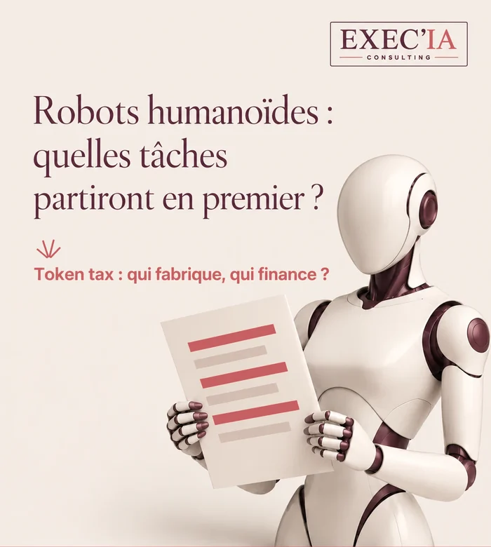

Robots humanoïdes : quelles tâches
partiront en premier ?
Version courte →
Salariés, managers, dirigeants : un robot humanoïde reprend des tâches, rarement un métier entier.
La Dares compte 457 500 emplois vacants dans le privé au 2e trimestre 2026. Les humanoïdes viseront d’abord ces métiers en tension : porter, trier, ranger, travailler de nuit.
Deux questions dépassent l’entreprise : qui fabrique ces robots, et qui finance la protection sociale quand une partie du travail ne passe plus par des salaires ? La « token tax » entre dans le débat.
Le mini-diagnostic de cet article mesure en 2 minutes le temps potentiellement robotisable de votre semaine.

Vous dirigez une PME, vous encadrez une équipe, ou vous vous demandez ce que deviendra votre propre poste ?
Cet article est pour vous.
Un robot humanoïde ne prendra pas votre métier d’un bloc. Il le grignotera tâche par tâche. Toute la question est de savoir lesquelles, et dans quel ordre.
Un Reel de LCI évoquait récemment 300 000 postes non pourvus en France. Le service statistique du ministère du Travail, la Dares, en compte davantage : 457 500 emplois vacants dans le secteur privé au 2e trimestre 2026, selon son chiffre révisé du 15 septembre.
Un emploi vacant n’est pas toujours un poste introuvable. La Dares y range des postes inoccupés, des postes tout juste créés et des postes sur le point de se libérer. Le chiffre ne dit donc pas « tant de personnes manquent ». Il dit : beaucoup d’entreprises cherchent du monde, en ce moment.
🔑 Pourquoi raisonner en tâches plutôt qu’en métiers ?
Parce qu’un métier est un assemblage. Un préparateur de commandes déplace des bacs, mais il repère aussi une erreur d’étiquette, rassure un client au téléphone, forme un intérimaire. Un robot peut reprendre la première tâche. Les suivantes demandent du jugement, de la relation, de la responsabilité.
Raisonner en métiers mène à deux erreurs opposées : croire que rien ne changera, ou croire que tout disparaîtra. Raisonner en tâches permet de voir ce qui bouge vraiment, poste par poste.
Quels métiers les robots humanoïdes viseront-ils d’abord ?
Ceux où les tâches sont physiques, répétitives ou pénibles, dans des lieux pensés pour des humains : entrepôts, ateliers, réserves de magasins, chantiers, exploitations agricoles, établissements de santé pour le transport de matériel.
Ce sont aussi, souvent, les métiers en tension. Le robot ne vient pas d’abord prendre une place occupée. Il vient tenir un poste que l’entreprise n’arrive pas à pourvoir : le travail de nuit, la manutention lourde, les tâches à risque.
Trois questions à poser pour chaque poste :
- Quelles tâches un robot pourrait-il reprendre ?
- Que deviendra le métier sans elles ?
- Quel poste vacant, autour de vous, un robot pourrait-il tenir ?
Pourquoi rien n’est imminent ?
L’engouement est réel, la réalité plus lente. Même Apple ne produirait pas ses robots en série avant 2028, selon l’analyste Ming-Chi Kuo. Les humanoïdes d’aujourd’hui restent chers, lents sur des gestes que l’humain fait sans y penser, et fragiles face à l’imprévu.
Le calendrier laisse donc de l’air. Ce temps sert à préparer, pas à attendre.
Quelle bonne nouvelle pour ceux qui gardent leur emploi ?
Un robot produit sans salaire, sans heures supplémentaires et sans augmentation annuelle. Une fois amorti, il pèse comme une charge prévisible, ce qui peut freiner une partie des hausses de prix.
À une condition : que le temps libéré serve à des tâches plus utiles et plus intéressantes, et non à ajouter de la charge. C’est un choix de direction, pas un effet automatique.
Qui fabrique ces robots ?
Au premier semestre 2026, 97 % des robots humanoïdes livrés dans le monde sortaient d’usines chinoises. Les deux premiers fabricants, AgiBot et Unitree, sont chinois.
La question se pose donc pour la France et pour l’Europe : concevoir et exploiter ses robots, ou les acheter clés en main, avec les données qu’ils recueillent dans nos ateliers et nos entrepôts. Pour une PME, c’est aussi une question pratique : qui assurera la maintenance, les pièces, les mises à jour ?
Qui finance la protection sociale ?
Nos retraites et notre protection sociale reposent largement sur les cotisations prélevées sur les salaires. Un robot n’en verse aucune, et il s’amortit comme une charge.
Bill Gates l’a formulé dans un long texte publié fin août 2026 : quand vous embauchez, vous payez des charges sur le salaire ; quand vous achetez un robot, vous pouvez souvent le déduire tout de suite. La fiscalité pousse ainsi, sans le vouloir, à remplacer l’humain par la machine.
Qu’est-ce que la « token tax » ?
Un token est l’unité de texte que traitent les modèles d’IA, et celle qu’ils facturent à chaque requête. L’idée consiste à prélever un petit pourcentage sur ces tokens, donc sur l’usage de l’IA, et non sur les seuls bénéfices des entreprises qui la développent.
Où en est le débat ?
1) Bill Gates défend l’idée de taxer les tokens d’IA et les robots.
2) Aux États-Unis, un projet de loi déposé au Congrès en août 2026, l’AI Tax and Work Protection Act, propose un taux de 2 % sur la valeur des tokens quand le chômage est à 5 % ou moins, puis un taux qui monte avec le chômage.
3) Les recettes financeraient des emplois et la reconversion. Certains y voient la base d’un revenu universel.
L’idée n’est pas neuve. Dès 2017, on débattait en France et au Parlement européen d’une taxe sur les robots. Ce qui change, c’est l’assiette : l’usage de l’IA se mesure désormais au token près.
Que peut faire une PME dès maintenant ?
🎯 Trois gestes, sans investir un euro.
1) Lister les tâches de chaque poste et le temps qu’elles prennent.
2) Repérer les postes difficiles à pourvoir, et ce qui les rend pénibles.
3) Décider ce qui doit rester humain, avant que la question ne se pose sous la pression.
Le mini-diagnostic ci-dessous fait le premier geste avec vous, en deux minutes.
💬 Taxer l’IA pour protéger
ceux qui perdent leur travail :
bonne idée, ou frein pour nos entreprises ?
Sources : Dares, emplois vacants au 2e trimestre 2026 (chiffre révisé du 15 septembre 2026) ; Journal du Web, 11 août 2026 ; Fortune, 26 août 2026 ; Fortune, 1er septembre 2026 ; Ming-Chi Kuo, via iThinkDiff ; Euronews, 29 septembre 2026.
Mini-diagnostic ROBOT · 2 minutes
Quelles tâches confieriez-vous
à un robot humanoïde ?
Classez vos tâches selon le niveau d’intervention souhaité :
Robot, Partagé ou Humain.
Uniquement des clics ; vos choix restent dans votre navigateur, rien n’est envoyé sans votre accord.
Vos tâches, à classer
Pour chaque tâche, estimez le temps consacré par semaine, puis choisissez : Robot, Partagé ou Humain. Les valeurs affichées sont un exemple, à remplacer par les vôtres.
Le temps non attribué compte comme du temps qui reste humain.
Le temps libéré irait plutôt vers…
Plusieurs choix possibles.
Quel poste difficile à pourvoir un robot pourrait-il tenir chez vous ?
Plusieurs choix possibles.
Votre synthèse
À confier en premierGardez votre diagnostic :
il n’est enregistré nulle part.
Puis collez-le dans un e-mail, une note ou un message.
Exemple indicatif : le bon classement dépend de votre entreprise.
Ce mini-diagnostic aide à réfléchir ; il ne mesure pas la faisabilité technique.
Lire l’article completenviron 3 000 mots
Ce qu’est un robot humanoïde, en 2026
Un robot humanoïde est une machine à forme humaine : deux bras, des mains, souvent deux jambes, une tête qui porte des caméras. Il combine trois briques. Un corps mécanique, des capteurs qui perçoivent l’environnement, et un « cerveau » d’IA qui décide du geste à faire.
C’est ce dernier point qui a changé. Pendant des décennies, un robot industriel répétait un geste programmé au millimètre, dans une cage, sans jamais s’en écarter. Les modèles d’IA récents permettent à un humanoïde d’apprendre un geste par démonstration, de reconnaître un objet qu’il n’a jamais vu et de s’adapter à une pièce légèrement déplacée.
Pourquoi une forme humaine ?
Parce que nos lieux de travail sont faits pour des humains. Les escaliers, les poignées, les étagères, les chariots, les outils ont été dessinés pour nos mains et notre taille. Un robot à forme humaine peut, en théorie, s’y glisser sans qu’on reconstruise l’entrepôt ou l’atelier.
C’est aussi sa limite. Dans un lieu conçu pour lui, un robot spécialisé, un bras fixe ou un chariot autonome, fait souvent mieux et moins cher. L’humanoïde se justifie là où l’environnement change, où les tâches varient, et où l’on ne veut pas tout réaménager.
Ce qu’ils savent faire, et pas encore
Aujourd’hui, les humanoïdes les plus avancés savent :
déplacer et ranger des bacs ou des colis ;
alimenter une machine ou une ligne ;
réaliser des contrôles visuels simples ;
faire un inventaire dans un lieu connu.
Ils peinent encore sur ce qu’un humain fait sans effort : saisir un objet mou ou glissant, se débrouiller dans un lieu encombré, comprendre une consigne ambiguë, réagir à l’imprévu. Leur autonomie se compte souvent en quelques heures, et leur vitesse reste inférieure à celle d’un opérateur entraîné.
Le titre d’Euronews le résume bien, fin septembre 2026 : l’engouement pour les humanoïdes se heurte à la réalité. La promesse est forte, le déploiement à grande échelle prendra des années.
Le vrai calcul économique
Un robot ne coûte pas seulement son prix d’achat. Il faut ajouter l’intégration dans les locaux, la sécurité autour de lui, la maintenance, les pièces, les mises à jour logicielles, la formation des équipes qui le supervisent et le temps d’arrêt quand il tombe en panne.
Beaucoup de fabricants proposent désormais la location à l’usage, sur le modèle du « robot as a service » : un abonnement mensuel, maintenance comprise. Pour une PME, c’est souvent la seule manière raisonnable de tester sans immobiliser un capital qu’elle ne récupérera pas.
La bonne question n’est donc pas « combien coûte un robot ? », mais « combien coûte une heure de tâche réalisée, comparée à une heure de travail humain, à qualité égale ? ». Tant que ce calcul n’est pas fait tâche par tâche, toute décision est un pari.
Le corps et le cerveau
On parle souvent des robots comme d’une révolution mécanique. C’est d’abord une révolution de l’IA. Le corps progresse, mais ce qui change la donne, c’est la capacité du robot à comprendre ce qu’il voit et à choisir un geste.
Pour un dirigeant, c’est une bonne nouvelle : les questions à se poser sont les mêmes que pour un outil d’IA logiciel. Quelle tâche, quelle donnée, quel contrôle humain, quelle responsabilité en cas d’erreur. La seule différence, c’est qu’ici l’erreur peut blesser quelqu’un.
Secteur par secteur
Logistique. C’est le terrain le plus avancé : déplacer des bacs, préparer des commandes, charger des chariots. Les entrepôts récents sont déjà très automatisés ; l’humanoïde vise les sites plus anciens, où l’on ne veut pas tout reconstruire.
Industrie. Alimenter une machine, déplacer des pièces en fin de ligne, réaliser un contrôle visuel. Les tâches de nuit et les postes pénibles viennent en premier.
Santé et accompagnement. Transporter le linge, les repas, le matériel, aider à certains déplacements. Le soin, l’écoute et la relation restent humains. Bill Gates propose d’ailleurs de réserver certains métiers, comme l’accompagnement des personnes âgées, à des humains, même quand les machines en seront capables.
BTP, commerce, agriculture. Porter des charges, nettoyer un chantier, mettre en rayon la nuit, désherber, cueillir certaines productions. Chaque fois, ce sont les gestes répétitifs et pénibles qui partent d’abord, rarement le savoir-faire.
Ce qui change pour les salariés
Quand une tâche part, le métier ne disparaît pas forcément. Il se recompose. Le cariste qui ne porte plus devient celui qui supervise trois robots, règle les incidents et forme les nouveaux. Le préparateur devient le spécialiste des commandes compliquées que la machine ne sait pas traiter.
Cette recomposition n’a rien d’automatique. Elle demande une formation, une reconnaissance et, souvent, une évolution de la rémunération. Sans cela, le robot est vécu comme une menace, et l’adhésion s’effondre avant même la mise en service.
Le rôle du manager de proximité
C’est lui qui verra le robot tous les jours. Il saura avant tout le monde si la machine fait gagner du temps ou si elle en fait perdre. Associez-le dès le départ : au choix des tâches, au réglage du pilote, aux règles de sécurité. Un manager qui n’a pas été consulté devient, sans le vouloir, le premier frein.
Sécurité et cadre juridique
Un robot qui se déplace parmi les salariés pose d’abord une question de sécurité. En Europe, le nouveau règlement Machines s’appliquera à partir du 20 janvier 2027 et encadre explicitement les machines dont le comportement évolue grâce à l’IA.
Le règlement européen sur l’IA, l’IA Act, classe à haut risque les systèmes d’IA qui servent de composant de sécurité à une machine. Les caméras embarquées filment aussi des personnes : le RGPD s’applique, avec information des salariés et limitation des données conservées.
Dans les entreprises d’au moins 50 salariés, l’introduction d’une nouvelle technologie qui modifie les conditions de travail passe par la consultation du CSE. Mieux vaut le voir comme une chance : c’est le moment d’expliquer, d’entendre les inquiétudes et de fixer les règles avant que la rumeur ne les fixe à votre place.
La souveraineté, concrètement
Avec 97 % des livraisons mondiales venues de Chine au premier semestre 2026, la question de la souveraineté n’a rien d’abstrait. Un robot connecté recueille des images, des plans de locaux, des rythmes de travail. Où vont ces données ? Qui peut mettre à jour le logiciel, ou l’arrêter ?
Pour une PME, trois réflexes suffisent pour commencer : demander où sont hébergées les données, vérifier que le robot peut fonctionner sans connexion permanente, et s’assurer qu’un prestataire local assure la maintenance. Ces questions ne font pas de vous un expert en géopolitique. Elles évitent une dépendance que vous découvririez trop tard.
La « token tax », en détail
Le projet de loi américain déposé en août 2026 prévoit deux taux de départ quand le chômage est à 5 % ou moins : 2 % sur la valeur des tokens, 3 % sur les revenus des services d’IA. Plus le chômage monte, plus les taux augmentent. Les recettes iraient à des emplois dans le logement, les infrastructures, la garde d’enfants et l’aide aux personnes âgées.
Bill Gates, de son côté, propose de taxer les tokens et les robots pour financer la reconversion et renforcer les filets de sécurité. Il plaide aussi pour des emplois « réservés aux humains », que la société choisirait de garder humains même quand une machine pourrait les tenir.
Les arguments pour :
l’impôt suit l’endroit où la valeur se crée ;
il corrige l’avantage fiscal donné à la machine sur l’humain ;
il finance la transition au moment où elle se produit.
Les arguments contre :
taxer l’usage peut freiner l’innovation, surtout dans les petites entreprises ;
les tokens se déplacent facilement d’un pays à l’autre ;
le coût risque de retomber sur l’utilisateur final, c’est-à-dire sur les PME elles-mêmes.
Pour une PME française, l’enjeu est concret : si une telle taxe voit le jour, elle s’ajoutera au prix des outils d’IA que vous utilisez. Mieux vaut savoir dès maintenant lesquels créent réellement de la valeur.
Et le revenu universel ?
L’idée revient à chaque vague d’automatisation. La Finlande l’a expérimentée en 2017 et 2018 auprès de deux mille chômeurs : le bien-être des bénéficiaires s’est amélioré, l’effet sur l’emploi est resté modeste. Le débat porte moins sur le principe que sur le financement. C’est précisément là que la « token tax » entre en jeu.
Les questions à poser à un fournisseur
Avant tout essai, six questions simples font gagner des mois :
sur quelles tâches précises le robot a-t-il déjà fait ses preuves, et chez qui ?
quelle cadence réelle, par heure, comparée à un opérateur ?
que se passe-t-il quand il ne comprend pas une situation ?
où partent les images et les données qu’il recueille ?
qui intervient en cas de panne, et en combien de temps ?
peut-on arrêter la location sans pénalité après le pilote ?
Un fournisseur sérieux répond sans détour, avec des chiffres mesurés chez d’autres clients. S’il ne parle que de démonstrations, vous savez où vous en êtes.
Ce que vos équipes se demandent
Elles ne se demandent pas si le robot est performant. Elles se demandent ce qu’il va changer pour elles : « vais-je garder mon poste ? », « devrai-je apprendre à le piloter ? », « qui sera responsable s’il se trompe ? ».
Répondez avant qu’on ne vous pose la question. Dites clairement quelles tâches sont visées, lesquelles ne le sont pas, et ce que deviendra le temps libéré. Une équipe qui connaît les règles accepte bien mieux l’essai qu’une équipe qui découvre un robot un lundi matin. Le premier pilote est aussi un test de confiance : ce que vous ferez du temps gagné sera observé par toute l’entreprise.
Ce que je conseille à un dirigeant de PME
Une méthode en cinq temps, sans achat préalable :
cartographier les tâches de deux ou trois postes clés, avec le temps qu’elles prennent ;
repérer celles qui sont pénibles, répétitives ou difficiles à pourvoir ;
décider avec les équipes ce qui doit rester humain ;
chiffrer une heure de tâche robotisée, location et maintenance comprises ;
lancer, si le calcul tient, un pilote de 90 jours sur une seule tâche.
À la fin du pilote, vous saurez ce que le robot apporte chez vous, et non chez un fabricant. Vous saurez aussi comment vos équipes l’ont vécu. C’est cette double preuve qui permet de décider, ou de renoncer sans regret.
Un exemple type
Prenons une PME de logistique de soixante personnes, qui ne trouve plus de préparateurs pour l’équipe de nuit. Plutôt que d’acheter un robot, la direction liste les tâches de nuit : une sur deux consiste à déplacer des bacs d’une zone à l’autre.
Elle loue un robot pour trois mois, sur cette seule tâche, avec un salarié volontaire chargé de le superviser. Au bout du pilote, le poste de nuit reste humain, mais il change de nature : moins de port de charges, plus de contrôle. Le recrutement redevient possible. Le robot n’a pas remplacé un salarié ; il a rendu un poste vivable.
Ce que les robots demandent, au fond
Moins de fascination, plus de méthode. Les robots humanoïdes arriveront par les tâches, une par une, et d’abord là où l’on manque de bras. Les entreprises qui auront fait leur cartographie à l’avance choisiront. Les autres subiront le calendrier des fabricants.
La question n’est pas de savoir si un robot peut faire votre métier. C’est de décider, avant d’investir, ce qui doit rester humain.